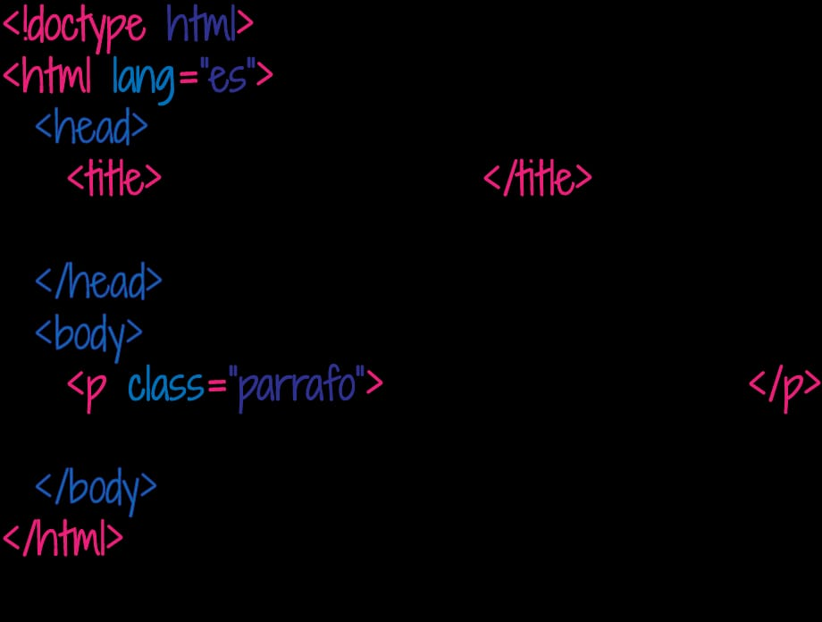
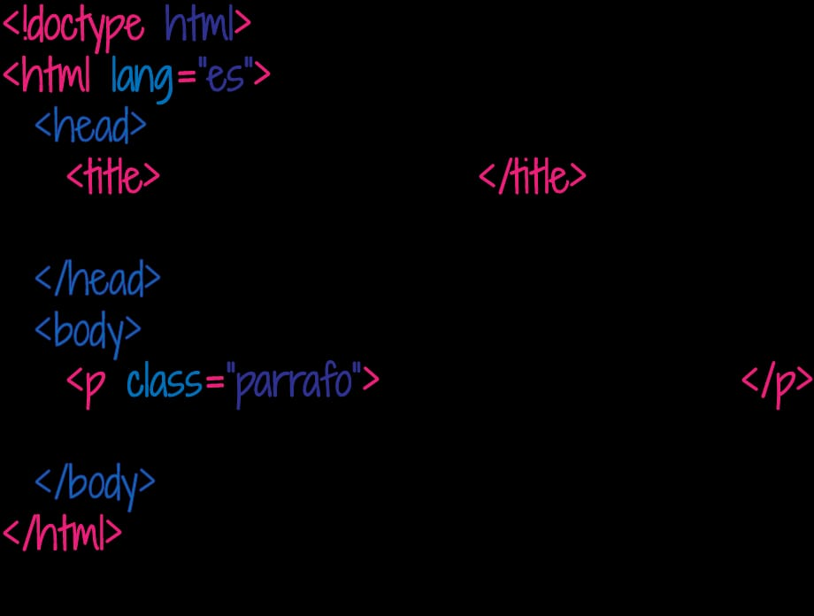
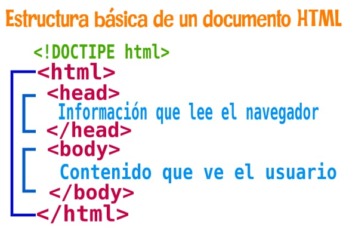
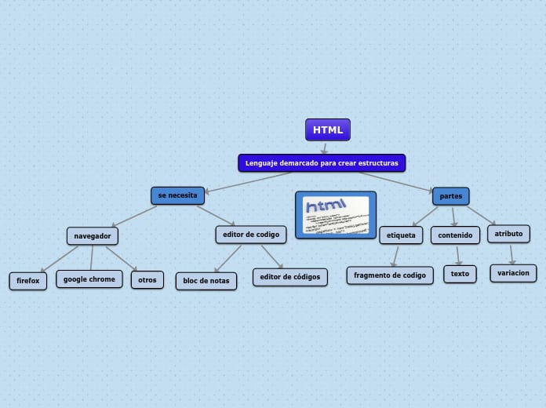

COLABORADORES
Natali CabreraMishell Martinez
Rony Hernández
Perla González
Alexa Chitay
Stefany Roque
Yordi Coj
¿Que es HTML?
Que es y para que sirve HTML? Las "tags" HTML, o "etiquetas" HTML, son códigos utilizados para "marcar" el texto de una página web, con el fin de dar instrucciones al navegador sobre cómo mostrarlo. Es decir, las etiquetas HTML son el lenguaje utilizado para estructurar y definir el contenido en un documento HTML. Estas etiquetas se encuentran en el HTML (o Lenguaje de Marcado de Hipertexto) de cada página. Cada etiqueta contiene instrucciones sencillas que indican al navegador cómo dar formato al texto y a definir los diversos elementos de la página web. Al aplicar estas etiquetas de marcado a los diferentes elementos del texto, se indica al navegador cómo mostrarlos al usuario, lo que permite crear páginas web estructuradas y con un diseño coherente.CARACTERISTICAS DE HTML
Sirven para organizar y estructurar una web Los elementos estructurales en HTML mejoran la organización y la estructuración del contenido de una página web. Esto significa que las etiquetas se utilizan para indicar qué parte de la página es el encabezado, el cuerpo principal, el pie de página u otros elementos clave. Esto facilita a los desarrolladores tener una mayor control sobre la organización y presentación del contenido en sus sitios web, y tiene una gran importancia para campos como el SEO o la accesibilidad web. Permiten definir jerarquías o niveles de orden Otra de las características principales de los elementos estructurales en HTML es que te permiten definir jerarquías o niveles de orden dentro del contenido. Esto significa que puedes usar etiquetas para indicar qué contenido tiene mayor relevancia, cuál mostrar después y así sucesivamente. Esto ayuda a los lectores a entender mejor el contenido al tener una idea clara de la jerarquía del mismo, lo que mejora la experiencia del usuario. Por ejemplo, a nivel de jerarquía los (h1) tienen prevalencia sobre los (h2), que a su vez tienen mayor importancia que, por ejemplo, un elemento (p). Son compatibles con todo tipo de dispositivos Otra característica clave de los elementos estructurales HTML es que son compatibles con todo tipo de dispositivos. Esto significa que podrás disfrutar de una experiencia óptima en cualquier parte, ya sea un ordenador, un teléfono móvil o incluso una consola de juegos o una Smart TV. Esta compatibilidad aumenta la accesibilidad y el alcance del contenido para los usuarios, lo que puede ayudar a las empresas a escribir código reutilizable. Incluyen semántica pensada para la accesibilidad web La estructura HTML crea contenido semántico que es mucho más fácil de leer y entender para los usuarios. Esto significa que los lectores pueden tener una mejor comprensión del contenido, lo que mejora la experiencia general del usuario. Incluso las personas con dificultades visuales o cognitivas pueden explotar estos elementos para navegar por las páginas web de manera más sencilla. Algunos ejemplos de componentes semánticos son el "footer", el "header" o el "article". Es posible anidarlos para construir contenido complejo Los elementos HTML son anidables, lo que significa que puedes usarlos para crear contenido complejo. Por ejemplo, la etiquetaEsto permite a los desarrolladores estructurar sus páginas web de una mejor manera y hacer que sea más fácil encontrar información relevante entre las demás secciones o artículos.
Otras de sus características son:
°Es fácil de usar y entender.
°Es utilizado para crear páginas web.
°Permite describir hipertextos.
°Permite archivos pequeños.
Su lenguaje es estático.
°Las etiquetas son limitadas.
¿Que es una etiqueta HTML?
Una etiqueta HTML es una palabra o letra especial rodeada de corchetes angulares “< >”. Estas etiquetas se utilizan para crear elementos HTML, como párrafos o enlaces. Muchos elementos tienen una etiqueta de apertura y una etiqueta de cierre; por ejemplo, un elemento p (párrafo) tiene una etiqueta, seguida del texto del párrafo, y luego una etiqueta de cierre
. Algunos elementos no tienen etiqueta de cierre. Estos se llaman elementos vacíos. Por ejemplo, el elemento br para insertar saltos de línea simplemente se escribe.Si estás trabajando con XHTML, puedes escribir elementos vacíos usando etiquetas de cierre automático.
Códigos Basicos de HTML
1. html – El elemento raízLuego de especificar , todos los sitios web siguen con el elemento html. También se lo conoce como elemento raíz porque está en la raíz del árbol de elementos que conforman una página web. Para crear el elemento html, debes escribir una etiqueta de apertura seguida de una etiqueta de cierre . Todo lo demás en tu página web va entre estas 2 etiquetas. Ejemplo: html Todos los demás elementos del sitio van aquí. /html
2. head – El encabezado del documento
El elemento head contiene información sobre la página web, a diferencia del contenido de la web en sí. Hay muchos elementos que puedes poner dentro del elemento del encabezado, como: Título. Enlace, que puedes usar para agregar hojas de estilo y faviconos a tu página. Meta, para especificar cosas como conjuntos de caracteres, descripciones de página y palabras clave para motores de búsqueda. Script, para agregar código JavaScript a la página.
3. title – El título de la página
Esta etiqueta contiene el título de la página. El título se muestra en la barra de título del navegador (en la parte superior de la ventana del navegador), así como en marcadores, resultados en las tendencias de búsqueda de Google y muchos otros lugares. El título debe describir el contenido de la página de manera precisa. Intenta dar a cada página de tu sitio su propio título único.
Esta etiqueta contiene el título de la página. El título se muestra en la barra de título del navegador (en la parte superior de la ventana del navegador), así como en marcadores, resultados en las tendencias de búsqueda de Google y muchos otros lugares. El título debe describir el contenido de la página de manera precisa. Intenta dar a cada página de tu sitio su propio título único.
4. body – El contenido de la página
La etiqueta body o contenido aparece después del elemento principal en la página. Debe contener toda la información de tu sitio web: texto, imágenes, etc. Todas las páginas web tienen un elemento de cuerpo único, con la excepción de las páginas de conjunto de marcos. Aquí hay un ejemplo el formato general del elemento body: body (Todo el contenido de la página va aquí) /body
5. h1 – Encabezado de sección
Los encabezados te permiten dividir el contenido de tu página en fragmentos legibles. Funcionan de manera muy similar a los títulos y subtítulos en un libro o un informe. HTML admite 6 elementos de encabezado: h1, h2, h3, h4, h5 y h6. De estos, h1 es para los encabezados más importantes, h2 es para subtítulos menos importantes, y así sucesivamente. Por lo general, no necesitarás usar más de h1, h2 y h3, a menos que tu página sea muy larga y compleja. Este es un ejemplo de un elemento de encabezado h1: h1 Las aventuras de mi gato Lucky /h1
Los encabezados te permiten dividir el contenido de tu página en fragmentos legibles. Funcionan de manera muy similar a los títulos y subtítulos en un libro o un informe. HTML admite 6 elementos de encabezado: h1, h2, h3, h4, h5 y h6. De estos, h1 es para los encabezados más importantes, h2 es para subtítulos menos importantes, y así sucesivamente. Por lo general, no necesitarás usar más de h1, h2 y h3, a menos que tu página sea muy larga y compleja. Este es un ejemplo de un elemento de encabezado h1: h1 Las aventuras de mi gato Lucky /h1
6. p – Un párrafo
El elemento p te permite crear párrafos de texto. La mayoría de los navegadores muestran párrafos con un espacio vertical entre cada uno de ellos, separando muy bien el texto. Si bien puedes crear «párrafos» de texto simplemente usando etiquetas
para insertar líneas en blanco entre fragmentos de texto, es mejor usar elementos p en la mayoría de los casos. No solo es más ordenado, sino que brinda a los navegadores y motores de búsqueda una mejor idea de cómo está estructurada tu página. Aquí hay un ejemplo de un párrafo:
El elemento p te permite crear párrafos de texto. La mayoría de los navegadores muestran párrafos con un espacio vertical entre cada uno de ellos, separando muy bien el texto. Si bien puedes crear «párrafos» de texto simplemente usando etiquetas
para insertar líneas en blanco entre fragmentos de texto, es mejor usar elementos p en la mayoría de los casos. No solo es más ordenado, sino que brinda a los navegadores y motores de búsqueda una mejor idea de cómo está estructurada tu página. Aquí hay un ejemplo de un párrafo:
7. a – Un enlace
Uno de los elementos más importantes de una página web, es el elemento a porque te permite crear enlaces a otro contenido. El contenido puede estar en tu propio sitio o en cualquier otro. Para crear un enlace, usa las etiquetas y alrededor del contenido que deseas colocar en el enlace e indica la URL para vincular en el atributo href de la etiqueta . A continuación, te mostramos cómo crear un texto que se vincule a www.ejemplo.com: ¡Visita este excelente sitio web!
Uno de los elementos más importantes de una página web, es el elemento a porque te permite crear enlaces a otro contenido. El contenido puede estar en tu propio sitio o en cualquier otro. Para crear un enlace, usa las etiquetas y alrededor del contenido que deseas colocar en el enlace e indica la URL para vincular en el atributo href de la etiqueta . A continuación, te mostramos cómo crear un texto que se vincule a www.ejemplo.com: ¡Visita este excelente sitio web!
8. img – Una imagen
El elemento img te permite insertar imágenes en una página web. Para insertar una imagen, primero carga la imagen en tu servidor, luego usa una etiqueta img para hacer referencia al nombre de archivo de la imagen cargada. Aquí hay un ejemplo: img src = "mifoto.jpg" alt = "Mi foto" El atributo alt es obligatorio para todas las etiquetas img. Lo utilizan los navegadores que no muestran imágenes para ofrecer texto alternativo al visitante.
El elemento img te permite insertar imágenes en una página web. Para insertar una imagen, primero carga la imagen en tu servidor, luego usa una etiqueta img para hacer referencia al nombre de archivo de la imagen cargada. Aquí hay un ejemplo: img src = "mifoto.jpg" alt = "Mi foto" El atributo alt es obligatorio para todas las etiquetas img. Lo utilizan los navegadores que no muestran imágenes para ofrecer texto alternativo al visitante.
9. div – Un contenedor a nivel de bloque para contenido
El elemento div es un contenedor genérico que puedes usar para agregar más estructura al contenido de tu página. Por ejemplo, puedes agrupar varios párrafos o encabezados que tengan un propósito similar en un elemento div. Por lo general, los elementos div se usan para: * Encabezados y pies de página * Columnas de contenido y barras laterales. * Cuadros resaltados dentro del flujo de texto
 
 